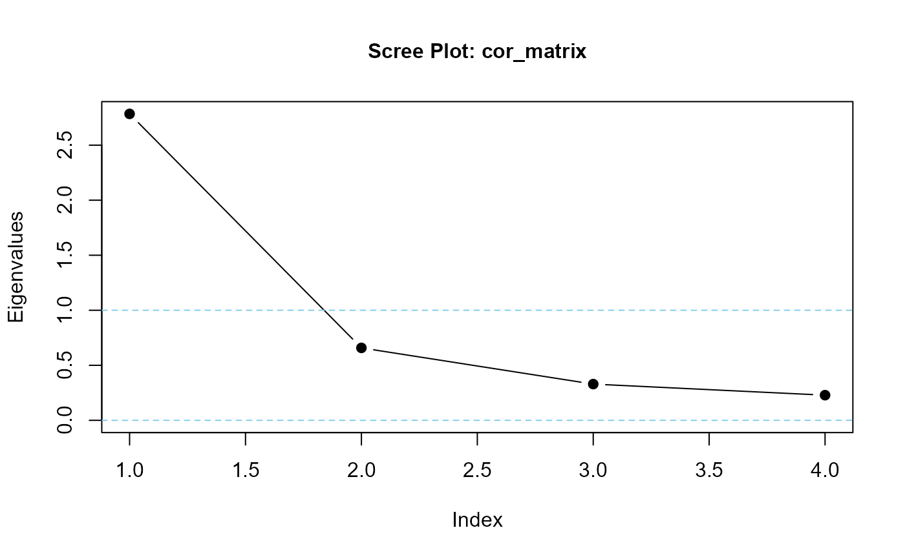
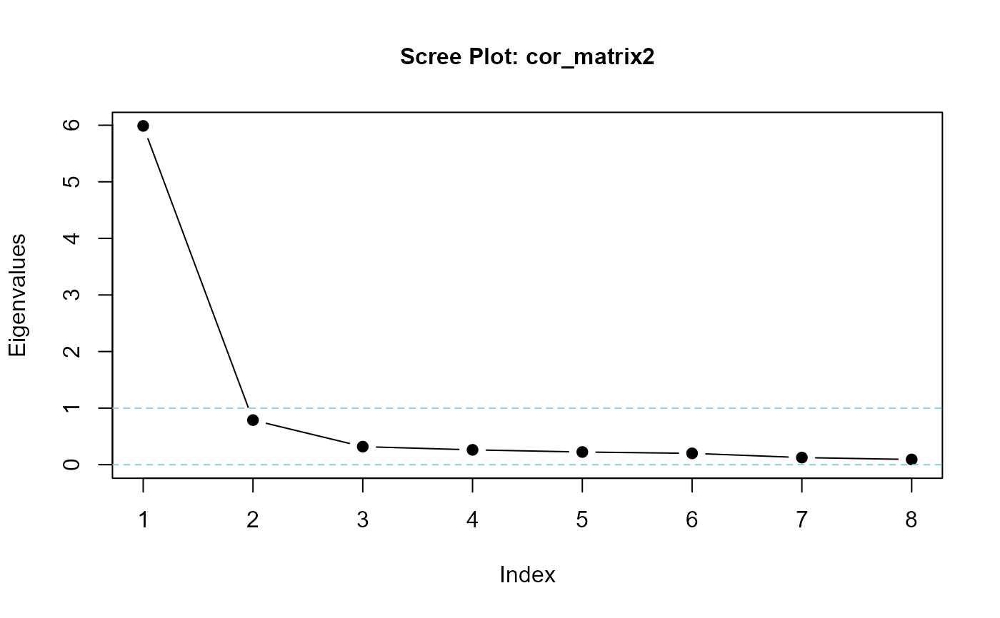
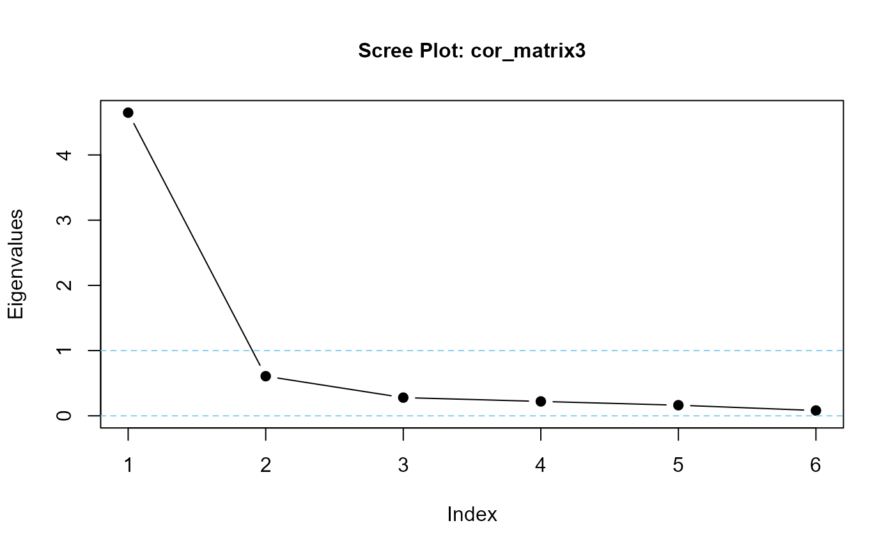

makeCorrAlpha() generates a random correlation
matrix of given dimensions and predefined Cronbach's Alpha.
Such a correlation matrix can be applied to the makeItems()
function to generate synthetic data with the predefined alpha.
Arguments
- items
(positive, int) matrix dimensions: number of rows & columns to generate
- alpha
(real) target Cronbach's Alpha (usually positive, must be between about -0.3 and +1)
- variance
(positive, real) Default = 0.5. User-provided standard deviation of values sampled from a normally-distributed log transformation.
- precision
(positive, real) Default = 0. User-defined value ranging from '0' to '3' to add some random variation around the target Cronbach's Alpha. '0' gives an exact alpha (to two decimal places)
Note
Random values generated by makeCorrAlpha() are highly volatile.
makeCorrAlpha() may not generate a feasible (positive-definite)
correlation matrix, especially when
variance is high relative to
desired Alpha, and
desired correlation dimensions
makeCorrAlpha() will inform the user if the resulting correlation
matrix is positive definite, or not.
If the returned correlation matrix is not positive-definite, a feasible solution may still be possible. The user is encouraged to try again, possibly several times, to find one.
Examples
# define parameters
items <- 4
alpha <- 0.85
variance <- 0.5
# apply function
set.seed(42)
cor_matrix <- makeCorrAlpha(
items = items,
alpha = alpha,
variance = variance
)
#> correlation values consistent with desired alpha in 59 iterations
#> The correlation matrix is positive definite
#>
# test function output
print(cor_matrix)
#> [,1] [,2] [,3] [,4]
#> [1,] 1.0000000 0.4251139 0.4331446 0.5069007
#> [2,] 0.4251139 1.0000000 0.6926037 0.6936888
#> [3,] 0.4331446 0.6926037 1.0000000 0.7658611
#> [4,] 0.5069007 0.6936888 0.7658611 1.0000000
alpha(cor_matrix)
#> [1] 0.8500063
eigenvalues(cor_matrix, 1)

#> cor_matrix is positive-definite
#>
#> [1] 2.7842025 0.6581071 0.3291732 0.2285172
# higher alpha, more items
cor_matrix2 <- makeCorrAlpha(items = 8, alpha = 0.95)
#> correlation values consistent with desired alpha in 731 iterations
#> The correlation matrix is positive definite
#>
# test output
cor_matrix2 |> round(2)
#> [,1] [,2] [,3] [,4] [,5] [,6] [,7] [,8]
#> [1,] 1.00 0.25 0.45 0.51 0.58 0.58 0.62 0.67
#> [2,] 0.25 1.00 0.68 0.69 0.69 0.69 0.70 0.71
#> [3,] 0.45 0.68 1.00 0.72 0.73 0.73 0.73 0.75
#> [4,] 0.51 0.69 0.72 1.00 0.76 0.76 0.78 0.79
#> [5,] 0.58 0.69 0.73 0.76 1.00 0.81 0.83 0.86
#> [6,] 0.58 0.69 0.73 0.76 0.81 1.00 0.87 0.89
#> [7,] 0.62 0.70 0.73 0.78 0.83 0.87 1.00 0.89
#> [8,] 0.67 0.71 0.75 0.79 0.86 0.89 0.89 1.00
alpha(cor_matrix2) |> round(3)
#> [1] 0.95
eigenvalues(cor_matrix2, 1) |> round(3)

#> cor_matrix2 is positive-definite
#>
#> [1] 5.988 0.788 0.319 0.262 0.224 0.200 0.126 0.092
# large random variation around alpha
set.seed(42)
cor_matrix3 <- makeCorrAlpha(items = 6, alpha = 0.85, precision = 2)
#> correlation values consistent with desired alpha in 2484 iterations
#> The correlation matrix is positive definite
#>
# test output
cor_matrix3 |> round(2)
#> [,1] [,2] [,3] [,4] [,5] [,6]
#> [1,] 1.00 0.47 0.48 0.68 0.71 0.71
#> [2,] 0.47 1.00 0.72 0.74 0.74 0.76
#> [3,] 0.48 0.72 1.00 0.77 0.77 0.78
#> [4,] 0.68 0.74 0.77 1.00 0.78 0.85
#> [5,] 0.71 0.74 0.77 0.78 1.00 0.90
#> [6,] 0.71 0.76 0.78 0.85 0.90 1.00
alpha(cor_matrix3) |> round(3)
#> [1] 0.94
eigenvalues(cor_matrix3, 1) |> round(3)

#> cor_matrix3 is positive-definite
#>
#> [1] 4.648 0.608 0.279 0.221 0.163 0.081